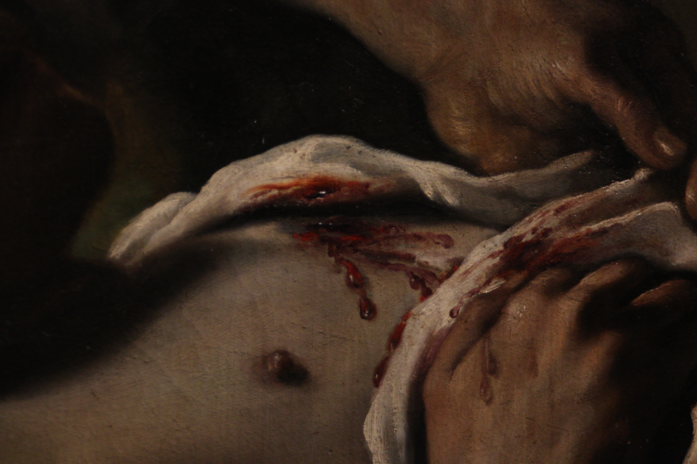

Antichi Richiami [it]
2026-05-22
So che un giorno tornerai
Nel trambusto di una grande festa
O silenziosamente, col trattamento che conoscono i solitari
So che tornerai, ma non so perché
O forse non voglio dirlo
E quando tornerai io sarò li a guardare
Completamente esposto
E allora però sono certo che incrocerai il mio sguardo
So che un giorno tornerai
E i tuoi occhi incontreranno i miei
E tra di noi non ci sarà altro che tutto il mondo
Esploso lungo una linea invisibile
Un valico d'arduo guado
So che un giorno tornerai
E forse mi vedrai ciò nonostante
O forse vedrai in me l'inverno immobile
E sarò ancora piccolo
Con occhi lucidi e mani bagnate
Col piano strozzato in gola dalla visione
Forse ancora sarò pietra
← Back to poetry